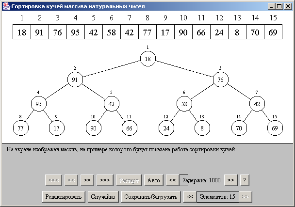
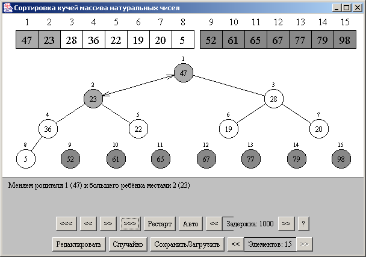
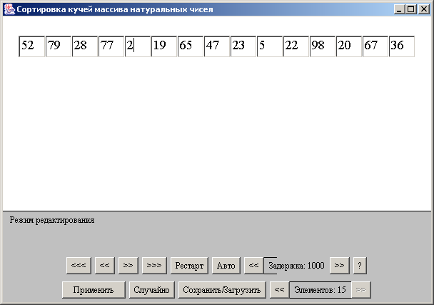

HeapSort - описание интерфейса
Описание элементов управления:

- Кнопка "<<<" - большой шаг назад;
- Кнопка "<<" - шаг назад;
- Кнопка ">>" - шаг вперёд;
- Кнопка ">>>" - большой шаг вперёд;
- Кнопка "Рестарт" - переход визуализатора в начальное состояние;
- Кнопка "Авто" - запускает автоматическую демонстрацию работы алгоритма;
- Кнопка "<< Задержка: 1000 >>" - устанавливает задержку между шагами при
автоматической демонстрации работы алгоритма;
- Кнопка "?" - предоставляет информацию об авторе визуализатора;
- Кнопка "Редактировать"/"Применить" - осуществляет переход между режимами редактирования
и визуализации;
- Кнопка "Случайно" - заполняет массив случайными числами;
- Кнопка "Сохранить/Загрузить" - позволяет сохранять и загружать состояния визуализатора.
- Кнопка "<< Элементов: 13 >>" - устанавливает количество элементов в сортируемом
массиве;
Описание визуализации:

Во время визуализации в окне апплета можно видеть:
сортируемый массив, и кучу описывающую процесс сортировки.
Рассмотрим подробнее сортируемый массив. Элементы к которым мы
обращаемся подсвечиваются светло серым цветом, при манипуляциях с
элементами(обмен), они подсвечиваются серым цветом. Отсоритированные элементы имеют
тёмно серый цвет, в массиве они немного отстоят от остальной части.
Описание редактирования:

При переходе в режим редактирования кнопка "Редактировать" меняется на кнопку
"Применить", а вместо массива выводятся текстовые поля, в которых можно изменить значения массива.
В случае, если в режиме редактирования не было сделано некакаих изменений, то нажатие кнопки
"Применить" вернет визуализацию алгоритма на тот шаг, в котором была нажата кнопка "Редактировать",
в другом случае, алгоритм будет переведен в начало.